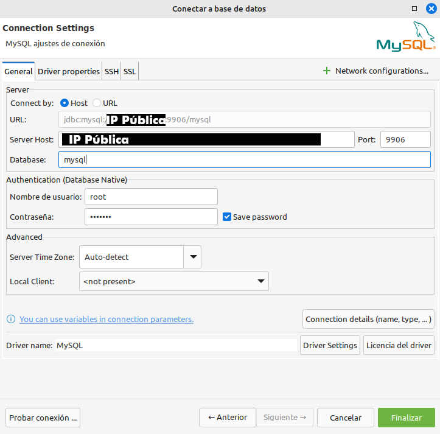

🧾 MySQL / MariaDB

- Baseado nas imaxes oficiais:
- MySQL: https://hub.docker.com/_/mysql
- MariaDB: https://hub.docker.com/_/mariadb
Instalación
É recomendable crear previamente un volume cun nome para ter localizado onde temos os datos e que non se borre se executamos un docker volume prune.
Tamén imos crear un directorio compartido, deste xeito resultará máis fácil importar as bases de datos de proba sen ter que instalar outro cliente ou ter problemas por non estar no directorio correcto durante a importación.
Agora creamos o contedor. O volume estará asociado ao directorio coa base de datos:
⚠️ Emprega o botón copiar da dereita para que non fallen os saltos de liñas e caracteres especiais nas diferentes terminais.
Aclaracións:
-p 9906:3306redirixe o porto9906do anfitrión ao porto3306do contedor.--envou-eserven para definir variables de entorno (configuración) presentes na imaxe.-vpermite asociar (montar) un directorio local a un directorio de dentro do contedor. Poderíamos asociado un directorio local/home/user/mysqldatosao contedor en/var/lib/mysqlco parámetro:-v /home/user/mysqldatos:/var/lib/mysql. Tamén poderíamos mapear un volume anterior con:-v ID_DO_VOLUME:/var/lib/mysql.--restart unless-stoppedRecupera no reinicio o estado do contedor (volve arrancalo) salvo que se parase explícitamente.-dExecuta o contedor en modo dettached (devolve o control á consola tras a súa execución).
⚠️⚠️⚠️ NON ESQUEZAS APUNTAR O CONTRASINAL DE ROOT:
Para saber o contrasinal de root asignado aleatoriamente debemos buscar nos logs unha liña que conteña: "[Note] [Entrypoint]: GENERATED ROOT PASSWORD:". Tras executar o contedor, dalle 20 segundos para que arranque de todo e executa:
E buscar a liña "IPAddress": "XXX.XXX.XXX.XXX" dentro de "NetworkSettings" (as X son números).
Apunta nun arquivo o enderezo IP e o contrasinal de root. Vas necesitalo varias veces!
Se estás executando unha instancia ou máquina, tamén é conveniente que averigues e apuntes o seu enderezo IP.
Por último comprobamos que teñamos correctamente asociado o volume de datos ao noso contedor:
Recuperar instancia de MySQL co seu volume
Se queremos recuperar unha instancia borrada, sempre e cando non borrásemos o seu volume de datos, anterior (non fai falta especificar usuarios ou contrasinais):
(CLI) Conexión directa co cliente
- Podemos engadir
-hX.X.X.Xpara conectar con outro equipo.
X.X.X.Xé a IP do servidor ao que queremos conectar.
- Podemos engadir
-hX.X.X.Xpara conectar con outro equipo.
Nota: Dende consola, en caso de certos caracteres especiais, pódense escapar con barra invertida ou poñer todo o contrasinal entre comillas simples.
(GUI) Conectar a MariaDB/MySQL con DBeaver
Se queremos conectar dende DBeaver na nosa máquina local e temos instalado o contedor de MariaDB/MySQL nunha máquina remota, tampouco debemos esquecer configurar o porto:

Na lapela Driver properties lembra mudar o valor de allowPublicKeyRetrieval a TRUE posto que é necesario no caso de empregar cifrado. Segundo a configuración, pode ser necesario.
Podes acceder a un manual máis detallado en 🦫 DBeaver e túneles SSH onde tamén aprenderás como realizar un túnel SSH. Este túnel pode ser necesario si o servidor de base de datos está detrás dun firewall.
Comandos básicos
- Ver as bases de datos:
- Seleccionar unha base de datos:
- Ver as táboas da BBDD actual seleccionada:
- Ver información do estado do servidor:
- Saír do cliente. Tamén funcionaría:
quitouCrtl+D: - Executar un arquivo .sql (útil para recuperar un backup)
Crear usuario, BBDD e permisos
CREATE USER 'usuario-a-crear'@'%' IDENTIFIED BY 'contrasinal-abc123.';
GRANT ALL PRIVILEGES ON base-de-datos.* TO 'usuario-a-crear'@'%';
FLUSH PRIVILEGES;
Importar BBDD de proba
Debes saber o contrasinal de root (mira arriba).
Este exemplo funciona se seguiches as instruccións e hai un directorio compartido no contedor.
Descargamos dende a máquina as dúas bases de datos de proba
cd $HOME/bd
wget https://github.com/datacharmer/test_db/releases/download/v1.0.7/test_db-1.0.7.tar.gz
wget https://downloads.mysql.com/docs/world-db.tar.gz
tar -xzf test_db-1.0.7.tar.gz
tar -xzf world-db.tar.gz
cd test_db
docker exec -it bbdd /bin/bash
Agora estamos dentro do docker, conectamos co cliente:
Escribe o contrasinal que tes apuntado para acceder e entrarás na consola de MySQL/MariaDB, despois executa os scripts para crear as bases de datos, os usuarios e dar permisos.
SOURCE employees.sql
CREATE USER 'empregado'@'%' IDENTIFIED BY 'Exemplar.123';
GRANT ALL PRIVILEGES ON employees.* TO 'empregado'@'%';
SOURCE ../world-db/world.sql
CREATE USER 'mundo'@'%' IDENTIFIED BY 'MundoMundial.456';
GRANT ALL PRIVILEGES ON world.* TO 'mundo'@'%';
FLUSH PRIVILEGES;
SHOW DATABASES;
Webgrafía:
- https://dev.mysql.com/doc/employee/en/employees-installation.html (https://github.com/datacharmer/test_db)
- https://downloads.mysql.com/docs/world-db.tar.gz
Backup con MySQLdump
Conectar a MySQL dende Python
⚠️ AVISO: Esta configuración NON pretende ser segura, o seu obxectivo é montar de xeito rápido un contorno para a aprendizaxe. Entre outras cousas deberíamos deshabilitar o usuario root para conexións remotas, borrar as BBDD de proba e impedir o acceso directo ao servidor de base de datos.
Adicional
Envío de arquivo a servidor remoto por scp
Se estiveras a conectar a un servidor remoto que non permite descargar arquivos externos, deberás baixar o script en local e logo copialo ao servidor:
Problemas de versión (engine)
Se estás a traballar coa versión: employees_db-full-1.0.6.tar.bz2 pode ser que teñas algún problema co engine. Neste caso, engadir "default_" diante das dúas liñas en employees.sql axuda. Fonte: stackoverflow.
Porto aberto?
En GNU/Linux podes ver qué portos están abertos con:
En docker podes ver as redireccións de portos don docker inspect.
No caso de instalación con docker, se ves que non tes aberto o 9906/9907 (segundo o exemplo) no anfitrión ou o 3306 onde teñas MySQL, probablemente debas cambiar o bind-address na configuración de MySQL ou MariaDB.
Edita o arquivo correspondente (en MySQL: /etc/mysql/mysql.conf.d/mysqld.cnf) e mete ou descomenta esta liña:
Ollo! Si é que non conectas ao porto 3306 pero o ves aberto, moi probablemente estea filtrado no firewall (na computación na nube ás veces filtran ese porto aínda que tí o abras explícitamente).